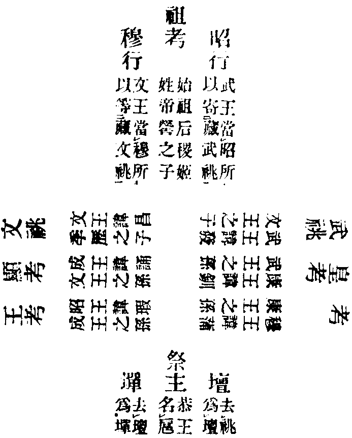

注并序
卍新纂大日本續藏經 第21冊
No.376 盂蘭盆經疏鈔餘義 (1卷)
【宋 日新錄】
第 1 卷
No. 376
蘭盆疏鈔餘義(并序)
餘之為義大抵明乎疏鈔之援引音義之異同誘諸來裔識其指歸也嘗考昔人以會粹略隨難解(普寧律師會粹記明義大師隨難解)用名義廣拾遺圖(淨覺大師述名義金山闍梨拾遺圖)交互其說不可悉數然其間義有可取者亦取之而但直節其辭意耳雖章句不完亦前載之餘故總命題曰蘭盆疏鈔餘義焉時熙寧元年歲次戊申六月望日啟講七月十有二日徹廗因而再刊又為之序云。
既瀆且壅
既已瀆亂且兼壅滯。
曹
輩也。
法師
愽通教法軌物為師出婆婆論。
庸
常也。
馴
巡音順也。
不撥荒蕪
撥度也不度荒唐蓁蕪耳。
輒事筆削
輒專也是者筆而存之非者削而去之。
播遷其文
播遷刪去也文煩則刪之對上削字。
彌縫其闕
彌縫補緝也闕略則補之對上筆字。
傳諸童蒙
諸之童幼蒙昧也周易云童蒙求我。
頗
甚也。
采摭英華
劉勰云捃摭英華班固云英華外發。
庶
近也。
中庸之義
言不煩不略也。
短於自見
短淺之能仍出自見。
冀
望也。
後之病今
後人病摭華之是非。
三葉
太祖太宗真宗如玉葉聯芳也。
聖駕
真宗法駕。
祀汾陰
漢武祀后土始立祀汾陰在水之南曰陰。
之明年
當辛亥年。
歲次
歲星也每年行一次。
依主受稱
經勝疏劣如臣依君故云依主稱去聲。
疏者布也
彼明臣下上天子書曰疏。
漢靈帝
後漢第十一主諱宏。
故廬子國
故舊也子爵號。
名諱
諱避也生有名死避之。
建中
德宗年號。
會昌
武宗年號。
平居
平昔所居。
終南圭峯
如助脩記辨之。
作者曰聖等
文出樂記摭華依劉勰引文耳。
若聖下
文出論語。
太初
元氣始萌。
太始
形氣始端。
清濁既分
徐整曰陽清為天陰濁為地。
適今
適猶近也。
天之經
經常也天有常明。
地之義
義利也地有常利。
援神契
宋均注援引神明契合之事。
有情則識神無始
言賴耶識中已具孝矣。
懷任交易
言地能懷藏任持萬物交更遷易也。
祭義
禮記篇名記其祭祀薦羞之義。
曾子
姓曾名參字子輿。
無朝夕
猶云無始終也。
所出不同
始混沌出援神契塞天地出祭義。
共成一義
豎深之義。
孝弟
悌音。
天子
爵稱也王者父天母之子也。
諸侯
侯君也謂列國之君。
士
事也任事之稱。
庶人
庶眾謂天下眾人也。
澤林茂
如察順盧感不生連理。
浮珍舒
如郭巨埋子全母天賜黃金也。
幽顯
顯明也禮云明則有禮樂幽則有鬼神。
二儀
儀像也分天地之形像。
因心之孝
孝經序云因心之孝已萌。
資敬之道
孝經云資於事父以事君而敬同。
儒
文選云愽通經史謂之儒。
五常
仁義禮智信為萬世常行之道。
本與
平呼語絕之辭。
形質由父母而生
祭義云身也者父母遺體也。
三學
此約大乘戒定慧三。
釋名
漢愽土劉熈撰。
爾雅
爾近雅正也近正之言故曰爾雅。
罪釁
或云過顯曰罪隱曰釁也。
童穉
牛無角曰童禾晚生曰穉人幼小以之。
喪亡
息浪切也。
濡
沾潤也小雨曰濡。
節序
八節如下序謂四時。
家語
十卷當時門弟子所集王肅注之。
適齊
適往也。
中路
去聲中。
謂僕
御車者即顏[利-禾+免]。
擁鎌帶索
擁持也鎌刈禾刀帶索刈之。
吾丘吾子
上吾自稱猶云我也姓虞名丘字吾子。
後還
旋音。
齊君
即齊景公有馬千駟是謂驕奢耳。
小子識之
識音志令小子記其言也。
十有三
十中有三辭歸養親。
檀弓
姓檀名弓由善於禮故以名篇。
不登壟
言慎敬也。
塋域
墓地也即墓之限域。
孝德傳
梁元帝撰凡三十卷。
廬于墳次
廬捿寄也墳之次舍。
三十年為世
古者三十娶妻而子孫可繼家業。
礿
薄也春物薄少。
禘
第音諦也諦審其物可祭先祖。
甞
新也甞新糓也。
烝
眾也冬物眾多。
包冬夏
例烝甞包礿禘也。
損益
損則祭殺牲命益乃設供拔苦。
三賢
十住初賢十行中賢十向上賢。
魯哀公
名蔣定公之子。
測物之性情
知子路之好勇測顏回之不愚。
紀
大網之繩曰綱小網之繩曰紀。
望
表望。
帝王
五帝三王。
以之安危
有賢者天下安無其人宗庿危。
測眾生之根性
接上根以六度測中下以諦緣。
佛土
通而言之則大聖所化之境也。
三世諸佛
對上五帝三王。
微功致巨益
一日之微功致生天之巨益。
少善破大惡
盆供之少善破劇苦之大惡。
但三塵
色香觸。
三尊
三寶皆尊皆重。
唐
堯帝姓伊祁名放勳始封於唐地。
虞
舜帝姓姚名重華始封於虞地。
夏
禹王姓姒名文命始封於夏今銀夏州是也。
商
姓子名履始封於商丘或云殷湯皆國號也。
周
姓姬名昌始封於岐周之地。
李巡
注爾雅。
孫炎
有爾雅義疏十卷。
更始
更平聲改也。
兼講
論語序云兼講齊說。
廣雅
張揖撰凡四卷。
大詰
陳大道告天下。
思齊
語云見賢思齊。
文宗
唐第十五帝名印穆宗之子。
慶成節
降誕之辰猶今之乾元節。
知命
五十知天命。
耳順
六十而耳順。
古疏雖多
紀國寺慧淨三藏亦有疏文今也則亡。
叶機符理
下叶機宜上符義理。
玄風
玄籍教風。
敬服尤深
肅敬服從尤甚也。
含文嘉
禮記緯書名也。
三仞
七尺曰仞。
半之
一仞半。
遭母憂
遭猶丁也。
刻像圖形
刻檀彫像圖畫形容。
貝多
西竺以貝多葉傍行而寫。
黃卷
朱士衡燒經盡成黃卷赤軸。
教理行果
下鈔具釋。
八輩
四果四向。
五位
資糧加行見道脩道無學。
同遵古訓
孝衡鈔并舊鈔諸文皆例歸三寶。
稽首
貫於下謂法僧二寶。
冥加
蒙於上亦佛法二寶。
注云
即孔安國作傳以注之。
問訊
言也郭璞云相問訊。
長跪
律鈔以尼弱故長跪僧彊故互跪。
屬
祝音。
舉豎而包橫
舉三界之豎包大千之橫。
悲智兼運
悲故不住涅槃智故不住生死。
三無數劫
梵云阿僧祇劫臘波此云無數時分。
五分律
即彌沙塞部五段之文。
睒
閃音。
雜寶藏經
下卷引之。
兜率
此云知足。
閻浮
具云閻浮提此翻勝金洲。
三十四心
八忍八智九無間九解脫。
自淺階深
自酬恩反妄之淺階密意歸真之深。
誘掖
誘引掖持也毛萇云故作諸以誘掖其君。
生前色養
養親色難。
沒後薦追
薦拔追思。
今試論之
試用也未敢正說且試傍論。
居則致其敬
平居必盡其敬。
養則致其樂
就養能致其歡。
病則致其憂
色不滿容行不正履。
喪則致其哀
擗踊哭泣盡其哀情。
祭則致其嚴
齋戒沐浴明發不昧。
居上不驕
當莊敬以臨下。
為下不亂
當恭謹以奉上。
仕醜不爭
醜眾也爭競也當知順以從眾。
則亡
危亡。
則刑
刑罸及身。
則兵
丘刃相加。
三者不除
驕亂爭。
三牲
牛羊豕。
佐成
佐助也疏者經之助也。
明之曰述
反用述者曰明。
分段苦
分限之年形段之身。
漢制
叔孫通定之。
皇帝
因秦始皇稱之。
嫡
正也。
世子
可以繼世。
金輪王
俱舍云金銀銅鐵輪一二三四洲。
迦毗羅
此云妙德。
公明儀
姓公名明儀曾子門人。
夫子
有德行之稱也即公明儀召師為夫子也。
稍
小也。
叔重
許慎字也。
十大弟子
次文略飜華梵緣起如例。
迦葉頭陀
迦葉飜飲光頭陀云斗藪。
阿難
此云歡喜。
富樓那彌多羅尼
此云滿慈子。
迦旃延
此云扇。
阿陀律
此云無滅。
鶖子
其母眼如鶖鷺。
優波離
此云近執。
羅睺羅
此云障日。
善現
梵云須菩提。
目連
如下所明。
來蒙
未來童蒙。
左傳
左丘明作傳解春秋。
頴考叔
如下卷鈔。
鈔斥
此並斥指。
既昧經部
昧人天教。
又枉聖人
言小聖無悲心。
不可不慎
慎言則少過也。
都
猶總也國君聚人而總會也。
邑
防邑也邑人之聚會。
王畿
祁音方千里以象曰。
封土
封聚也。
除地
除掃也。
應遷
應平聲當也。
享甞乃止
享献秋祭曰甞秋物備矣故特舉之。
穆行
穆敬也子肅敬於父。
寄藏文祧
寄藏謂四時不祭也。
適士
的音王之上士。
官師
一官之長。
庶人無廟
祭之於寢。
上士
今之正卿。
中士
今之朝官。
下士
今之少官。
府史之屬

有志於摭華鈔者未始不廣引夏殷周以至于有唐立廟之多少歷代之差當是皆亡本逐末叛釋泥儒耳試為陳之夫鈔者疏之助也迹疏以通經由經以明孝此其大槩也今諸家殊不究疏之之要辭經之之孝道但漁獵鈔文穿鑿群籍立廟有多少歷代有差當豈非亡本逐末叛釋泥儒乎然摭華引禮記祭法其中注文皆鄭氏之微言向出名圖兼示昭行寄藏武穆行寄藏文耳然而子廟既向於父則祖與孫同列矣而言遷廟者蓋四親之名雖遷而昭穆之行不移此通制也若謂互而遷之無乃乖於昭穆失於寄藏者乎且立庿之宏規實儒家之大務而空門末學率易辨之亦猶握管窺天持螺酌海又安能知其高闊深廣哉。
嚳
哭音。
釗
招音。
扈
戶音。
五教
義慈友恭孝。
孝弟
去呼善事父母曰孝善事兄姉曰弟。
踵
足後。
肖
似也不似其先。
得中
得其中庸。
子思
名伋給音。
伯魚
孔鯉字也。
跂
企音望也。
杖而後起
父亡竹杖母亡桐杖。
陽貨
即陽虎也。
疏雖論禮壞樂崩
宰我雖說禮壞樂崩。
終訶衣錦食稻
仲尼終責衣錦食稻。
衣
意音。
食
嗣音。
宰我
姓宰名予字子我。
禮必壞
禮壞無以撿人迹也。
樂必崩
樂崩無以和人心也。
食旨
旨美也。
蔓延
上萬音延去聲若蘿蔓延而不絕也。
布濩
下護音長多貌出文選注文。
通喪
孔曰自天子達於庶人。
始從鹿苑
亦名施鹿林文出智度論。
肇啟五乘
釋上鹿苑誘五乘之之權也。
梵音廣略
廣則四字略唯三字。
左右
猶云楚夏也。
晉譯華嚴
即覺賢三藏譯成六十卷。
二障麤細
煩惱障麤所知障細。
非三五等時
此辨逐機頓教非三五漸收。
不徇
隨也。
摩竭提
云無毒害。
阿蘭若法
云最靜法。
九會
以普光明重說兩會添七成九。
六位
十信三賢十地等覺即六位圓因也。
但略標名
釋疏不引華嚴。
餘生
餘諸眾生。
頓制
十重四十八經。
十支
小乘但七身三口四今約大乘加意三。
初義
即孝為至極之道等。
跨
猶云過也。
樂正子春
正掌也即掌樂之官名子春姓未詳。
子春曰善句跬
丘弭切三尺曰跬六尺曰步。
衾
被也。
而今而後吾知免夫
句。
矜
驚音。
斷
短音。
文選
梁昭明太子撰。
甌駱
甌地名駱姓也。
泰誓
尚書篇名泰大也大會以誓眾。
上帝
上天大帝。
下是
釋降時二字也。
正色
青黃赤白黑等。
間色
紅綠紫碧。
為省招害之徒
言作過招禍之者也。
太伯
周太王之長子。
斷髮文身
以讓位之德亦不可用也。
歎為至德
論語云泰伯其謂至德也已矣。
排斥
排擯斥逐。
幾諫
上平聲微也。
波羅門
此云淨志。
七多羅樹
似此方椶櫚高長六七尺。
娑羅
此云堅固。
王充
僧述無鬼論為圭峯取破。
有子
姓名若字有子。
措
置也。
韓康伯
名伯字康伯師王弼注易繫辭。
西域記
唐三藏撰十卷。
四分
業疏序云據說之章段也。
吉羅
具云突吉羅善見飜云惡作。
散齊七日以定之
定其志意此猶居本處也。
致齋三日以齋之
出本處往庿側今宿齋廳是也。
致齋於內下
此則致齋於庿內散齋於庿外也。
見其所為齋者
鄭玄云思之孰也為去聲。
設供如今經
言忌辰設供如蘭盆薦親。
疏資其業報
助其善業樂報。
卒哭
百日。
祥日
小祥朞年大祥三年。
布施二田
三寶敬田貧病悲田。
姬周
姬姓周代。
夷狄
東夷北狄。
圖難於易
佛教報應難弘禮法祭祀易舉。
陟遐自邇
遐遠佛教也邇近禮法也。
先遣二聖
老子摩訶迦葉仲尼光淨童子。
支那
亦名震旦此云思惟以情慮多端故。
列子
姓列名禦冦宋國人著書八篇莊子師之。
商太宰嚭
商姓太宰官也名嚭。
三王
夏殷周。
五帝
少昊顓頊高辛唐堯虞舜。
三皇
伏羲神農黃帝。
駭
驚也。
匿
隱也。
[衍/言]
過也。
子貢
字也姓端木名賜。
告朔
告音谷朔穌也魄死而復蘇。
餼
戲音腥羊曰餼。
朝享
上直遙切。
佛法肇至
騰蘭齎四十二章經并白氎像等。
真宗
即佛教。
逮疏主之世
逮及也謂德宗之代。
乾卦
乾健也本以象天天体乾用也。
帝釋
具云釋迦因陀羅此云能天帝。
四等
慈悲善捨化生平等故。
梵王
色界初天王。
潔靜精微
禮記經解云潔靜精微易教也。
至命之書
易云窮理畫性以至于命。
大夫不揜群
言卿大夫行獵不盡群而多取也。
士不取麛卵
麛迷音鹿子也卵鳥子也。
孟子
名軻字子輿師子思治中庸之書。
用殺止殺
用少殺止多殺。
楞伽
此云種種現。
八佾
論語篇名佾逸音列也天子八佾舞於庭。
月令
秦相呂不韋造。
中氣日在低
中氣時太陽躔氐宿度。
昏須女中
謂黃昏二刻半女星現南方也。
斗建戌位
北斗柄指於戌位即九月也。
飤
嗣音。
誄
力軏切累也言人死後累其德行。
達士徇名
此一句是誄辭曹子建作。
鄉
音向。
孔氏傳
孔安國注尚書蓋言傳通其義也。
澗
山夾水澗。
谿
水注川曰谿。
沼
小池。
沚
小渚。
蘋
大者曰蘋小者曰萍。
蘩
蒿也。
蘊藻
聚藻也如海藻之類。
筐
區方切。
筥
九呂切。
錡
犧音即三足鼎。
潢汗
停蓄之水也上黃音下鳥音。
行潦
流水也上平聲下老音。
東鄰
紂居衛國朝歌之地故曰東。
西鄰
文王在岐山之陽故曰西伯。
王弼
字輔嗣官至尚書年二十四受饗。
內外障
內障炬火針咽外障見大力鬼等。
子游
字也姓言名偃。
一曰
即何晏子平叔注辭。
愛而不敬獸畜之
如人畜獸但愛而不能敬也。
僧俗之儀
應云出世之儀。
曲禮下
禮記內則篇敘孝行大同。
僧祇
具云摩訶僧祇此飜大眾部。
增一
即阿含經。
篡
初患切奪也。
文常
即前漢第三主。
文王世子
古無定制繼世之子即周文王也。
不脫冠帶而養
言常待左右也。
亦一飯
欲知氣力鍼藥所勝也。
間
去聲。
唐傳
澄照大師撰。
高齊
南齊姓高。
微行
即擔舁也。
衣著食飲
衣食皆去聲。
女身經理
凡母身有患皆紀經歷治理。
說命
悅音名也姓傅高宗命之為相。
見齒
上胡旬切。
清卓
清尚高卓。
白[疊*毛]
應法師經音云天竺貴布也。
難陀
此云喜佛親弟。
羅云
佛嫡子也飜梵如前。
喪足
喪車之後。
經云動徧動普徧動
疏云搖颺不安為動。
起徧起普徧起
自下漸高為起。
踊徧踊普徧踊
忽然騰舉為踊。
震徧震普徧震
隱隱出聲為震。
吼徧吼普徧吼
雄聲郁遏為吼。
不載
上聲記也。
舁
以諸切對舉曰舁。
禮不足
殯葬之禮。
委官
委棄其官與新令尹。
豫章
洪州。
難傳
傳字解疏弘字。
善惡報應
過去善惡為因今世苦樂為報。
前驅
猶云先鋒也。
誣
枉也。
三后
太王王季文王。
升靈上旻
旻天也反詰三后在天也。
背叛
隱匿也。
餘趣
通六趣。
已遷他蘊
謂中陰身別遷他趣五蘊耳。
陶
遙音。
士五刑有服
士理官也言刑之輕重各使服從。
劓
魚器切。
剕
扶沸切。
大辟
大罪。
革與服改制度
改革車輿服飾製度。
刖
月音。
決關梁
決開也謂開其關而撤其梁。
踰
越也。
閹人
古者閹官守門即今之黃門也。
冦
自內而取曰寇。
賊
自外而取曰賊。
刧
用兵而取曰刧。
掠
音諒巡行而取曰掠。
奪
欺弱而取曰奪。
攘
以手御物曰攘語云其父攘羊。
矯
詐也詐稱上命取之。
虐
殺也行殺盜物。
周穆王
周第六王諱昭。
享
當也。
司寇
掌刑典之官。
今訓夏贖刑
使訓暢夏禹贖刑之法。
三十國春秋
揀魯國春秋列晉宋等國肅方等撰。
池陽
姓池名陽。
舍
捨音。
妻
砌音。
禪
去聲讓也。
廩
倉有屋曰廩。
周官
周禮建官有一百二十。
裁省
裁量省察。
婆沙
此云廣解或飜種種說。
疏論則推徵解釋
宗釋二論皆有推徵解釋。
從容判經
蓯音言此經攝於化制故云從容也。
憑心靈覺
歸佛。
憑佛所說
歸法。
憑心正伴
歸僧。
曇無德
此云法密亦云法藏。
薩婆多
此云一切有也。
徑挺
即長小貌。
六天
四王忉利夜摩兜率化樂他化。
八定
空處識處無有處非非想處加四禪成八也。
埤倉
上卑音張揖撰文有三卷。
汎
通也。
父有爭子
有諫爭孝子也。
故當不義
當為也矣。
扶持之
慮有舉動之失故扶而持之也。
不可侵官
各有司職。
方喪資於事父不聽
平聲。
子夏
字也姓卜名商。
世傳
非經史所載也。
聲罪
揚聲陳首罪名。
王祥
字休祺臨浙人承事繼母。
賣身
賣猶質也。
從晉
上去聲。
盾三諫靈公
靈公無道樹樓臺彈人民。
公怒欲段之
公作夾幕藏五百甲兵欲害之。
盾走
句。
出乘車
輒為五百甲兵之一故扶輪以報之。
無扶輪之說
不須和會。
晉武帝
西晉武帝諱炎字世安即文帝之元子。
惠帝
即武帝第二子諱衷字正度。
譯經圖紀
釋靖邁撰。
略舉汲灌
即題云灌臘經。
以省其餘
省亦略也其餘即香油錠燭等。
倒懸
孟子猶解倒懸趙岐注喻困苦也。
孔安國
名也字子國孔子十一世孫也。
冕服彩章
冠冕服飾五彩十二章具如周禮。
有夏昏德
夏桀昏亂不恤下民。
窘
逼急之甚。
彌天
盛德茂業如令摸鈔。
習鑿齒
姓習名鑿齒字彥戚。
疏非信不階
升也入也智度論云信為能入也。
老子
姓李名耳字陽諡曰聃。
游化住止
游化則舍衛住止則祇園。
阿含
此云淨教。
始本合
始覺智合本覺理也。
疏具足欲塵
佳麗女色。
財寶
珍奇寶物。
多聞
愽通內外典籍。
解脫
五通仙人此則國豐四德亦名豐德城。
鰥
應法師云人不寐目常鰥鰥然如魚目之不閉。
無告
告之言訴也言此四是無告訴者。
園圃
倉頡篇云種木曰園種菜曰圃。
法水初流
齎白[疊*毛]畫像四十二章經初流通此土。
邸舍
暫至曰邸。
毗曇
法也論名。
別館
白馬等寺。
三漏
煩惱并無明如小乘諸論。
除徹
十三月除而徹去之。
高宗
唐第三主諱活太宗之子也。
天后
則天也以未登九五故曰天后諱[賏/空]音照。
上表
標也標陳己情進於上也。
垂拱
則天年號。
玄宗
唐第六主諱隆基睿宗之子。
左補闕
太祖皇帝改為左正言。
五禮吉禮
致敬神也。
凶禮
為之棺槨。
賓禮
朝聘。
軍禮
戰戎。
嘉禮
嫁聚。
啟寤
啟開窹與悟音義同。
北遠
隋朝慧遠法師制涅槃經疏。
從母立姓
如鶖子與慈氏。
耐
音柰。
十三卷
或可第十三王從文王至幽王正當其數。
幽王
諱涅宣王之子。
宋書
劉義撰後編入南史。
簞食
上音丹竹器也下音嗣。
瓢飲
即匏片持水耳。
亞聖
亞次孔聖。
浮
捊音。
疏朋友
同門曰朋同志曰友。
縱廣
韓子云南北曰縱東西曰廣。
刀塗道
有云鬼折草為刀更相殺害詳之。
尸子
姓尸名佼音絞魯人著書二十篇。
孝衡
蘭盆鈔名東京遇榮大師撰亦二卷。
三時無悔
初殺正殺已殺。
疏此洲
南瞻部洲。
一切經音義
應法師撰凡二十五卷。
楚辭注
王逸注之。
通俗文
釋通方俗之言。
苦樂並受
淨住子云王或臥鐵牀等苦。
楚炙賢良
炙隻音尚書云焚炙忠良。
自惡
音汙憎也。
付法藏傳
吉迦夜與竺曇耀譯。
倮
胡瓦切露身也。
吾息
子也。
鳴稚
地音擊木作聲謂之信皷。
以福故宮殿七寶
指前二鬼。
堂閣嚴飾
指後眾僧。
以罪故而受鬼身
通指上二。
膺
當也。
元啟
孫悟之子。
沿襲
沿流承襲。
拊心
女弱故拊擗其心。
跳身
男彊故跳踊其身。
元嘉
宋文帝年號。
起居注
史臣記天子之事也。
節氣加減刻漏規式
刻漏更點起自軒轅故周禮云挈壺氏掌之是也近世釋瑞新作壺更刻漏其文簡而理詣故士大夫多取之然起居注以春秋二分明五十五刻此乃一家之說今依本朝定景福殿秤漏春秋二分各五十刻匪唯學者之易曉亦古今之通規歟比見講學多昧於此因而錄之庶備詳覽勿謂鈔簡貴引文繁云耳。
惄
奴力切思也。
饋
匱音。
勝也
上平聲。
不行惠施
釋慳。
侵奪他財
釋貪。
七支
識名色六入觸受生老死。
貪無是過
無傷慈過。
鬼無分別煩惱
無分別之慳惑有人中之習氣。
穿鑿
孔融曰妄作文章穿鑿以成。
第六天
即他化自在天。
西方毗樓愽叉此云廣目管二部
龍王富單那。
北方毗沙門此云多聞管二部
夜叉羅剎。
謝安
字萬石官至大傅出晉書。
春冬過少
不言秋者以西天但分三際耳。
四月十六日是前安居
唯結一日。
五月十六日是後安居
亦結一日。
但結三月
五月十六日六月十六日七月十六日。
始從十六至後十六
四月十六至五月十六。
增三中三日
十四十五十六。
彝章
彝法章明即制教也。
瑕疵
玉病曰瑕人病曰疵。
摩得勒伽
此云本母。
不孤獨
自恣懺罪得入清眾。
十二分教
如華嚴圓覺二疏廣辨。
篇聚
五篇七聚廣略釋義如律鈔。
喻犯四重
婬殺盜妄。
喻犯偷蘭
具云偷蘭遮善見飜為大罪。
喻犯二提
謂三十捨墮九十單提也。
喻犯吉羅
具云突吉羅義飜應當學。
為篇闕提舍
具云提舍尼義飜向彼悔。
為聚不開第五
不開吉羅。
亦闕提舍
篇中既闕聚中亦然。
伏首
獸音自言其罪曰首。
遮法
遮舉也依當篇舉法治之。
至高祖
曾孫孫子考祖曾祖高祖是謂七世。
方言
揚雄撰郭璞注解異方之語也。
鐙
燈音。
糩
檜音。
旃檀
此云與樂。
太甲
殷第四帝名。
烱
逈音。
大小仍異
大乘三學與小教經論律不同。
柰
狀似李出西京。
芥
其味香美者趙國有之。
爾雅下
壻之父為姻婦之父為婚鈔多母字。
疏財賄
呼罪功贈也。
畢鉢羅窟
即七葉嚴。
宛
鴛音。
奔共
恭音。
亟
器音數也。
繕甲兵
繕脩甲鎧。
具卒乘
卒首也乘繩證切。
掩不備
掩以兵而取也備防也。
啟之
夫人內應將啟宮門。
帥
所類切將帥也。
伐京
有鐘皷曰伐無鐘皷曰侵。
公子呂
名呂字子封即莊公之子。
汲郡
今之衛州。
食舍
捨音。
以遺
遺猶賜也。
何患
憂也。
若闕
橛音掘也。
隧
遂音。
延道
延長也。
經宰相
宰執山河相助天子。
百官
即百辟也詩云率茲百辟。
萬民
通士農工商四民。
庶人
眾人也書云格爾眾庶。
周官
周家設官分職。
太師
天子所師。
太傅
傅相天子。
太保
保安天下。
皆仍之
仍因也。
俱舍
此云藏。
通胎化二
亦如刊定。
春秋運斗樞
春秋別解之名。
譙子法訓
晉譙周撰。
替
廢也。
數
上聲。
鴞
干嬌切。
喙
許穢切觜也。
劉子
即劉□。
東京賦
張衡作。
士女
即優婆塞優婆夷也。
今受神方
結前目連聞教。
兼覩靈驗
結前設供獲益。
天懸象
象謂日月星也。
父受氣
傳體相續。
揚子法言
楊雄字子雲法論語立言。
反魂起屍
喻脫鬼身生於善道。
蘭盆疏鈔餘義(終)